Contents
- Generating and Visualizing the Shepp-Logan phantom image
- Q2.a) Visualising radon transform, backprojection
- Q2.a) Implementation of filters using Fast Fourier Transforms
- Q2.a) filtered backprojection using different filters
- Q2.b) Reconstruction of blurred version of Shepp-Logan Phantom
- Q1.c) Plotting RRMSE vs L
Generating and Visualizing the Shepp-Logan phantom image
sz = 256;
im = phantom(sz);
printImage(im,'Original phantom image - f(x,y)');
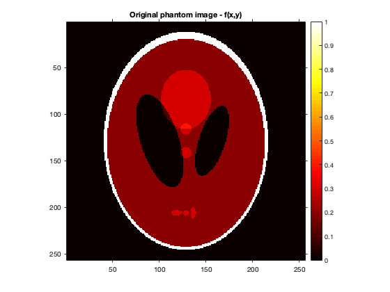 Q2.a) Visualising radon transform, backprojection
theta = 0:3:177; % radon transform [R,t] = radon(im,theta); printImage(R,'Radon Transform',theta,t); % unfiltered backprojection imr = iradon(R,theta,'linear','none',1,sz); printImage(imr,'Unfiltered backprojection');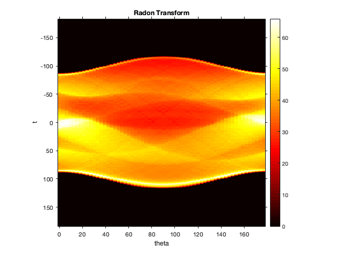 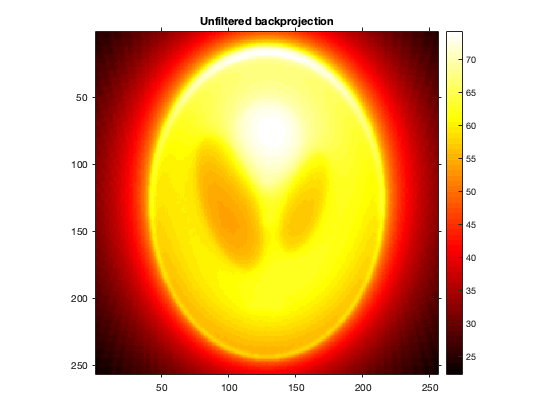
Q2.a) Implementation of filters using Fast Fourier Transforms
function [Rf,Aw] = myFilter(R,t,filter,L) function Cw = C(w,L) if strcmp(filter,'ram-lak') Cw = ones(size(w)); elseif strcmp(filter,'shepp-logan') Cw = sinc(0.5*w/L); else Cw = cos(0.5*pi*w/L); end end FR = fft(R,[],1); w = linspace(-1,1,length(t))'; L = L*max(w); w_abs = abs(w); Aw = w_abs.*C(w,L); Aw(w_abs > L) = 0; Aws = circshift(Aw,[floor(length(Aw)/2) 0]); Rf = real(ifft(Aws.*FR,[],1)); end
Q2.a) filtered backprojection using different filters
filter.name = {'ram-lak','shepp-logan','cosine'};
filter.value = {[],[],[]};
for i=1:length(filter.name)
for L=[1 0.5]
[Rf,filter.value{i}] = myFilter(R,t,filter.name{i},L);
imr = iradon(Rf,theta,'linear','none',1,sz)/2;
printImage(imr,sprintf('Backprojection using %s filter with L=%.1f',filter.name{i},L));
end
end
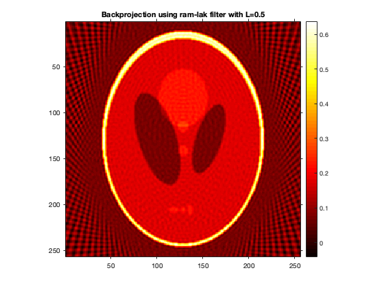 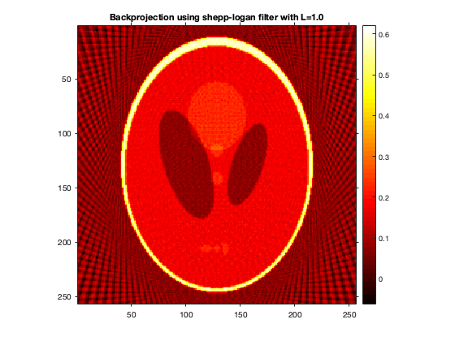 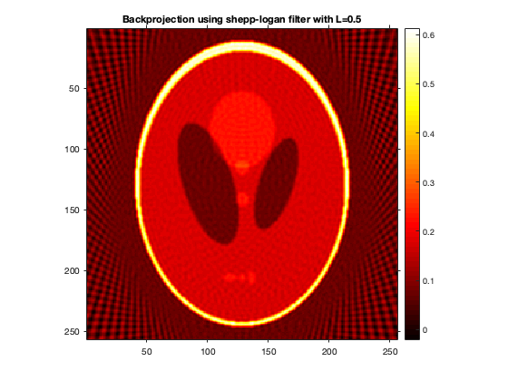 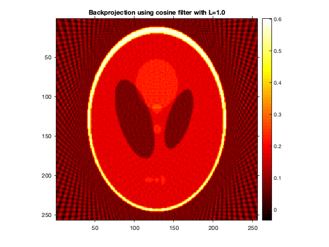 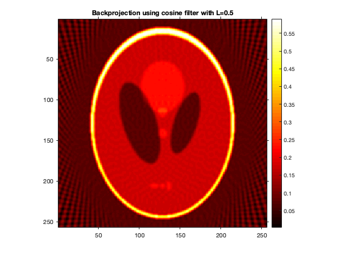 For all of the 3 filters, the reconstructed image with L = w_max/2 is smoother than the other. This is because L = w_max/2 eliminates the frequencies which are relatively too high making the image smoother. Across the filters, Ram-Lak filter is roughest and Cosine is smoothest among all. Though Shepp-Logan is smoother than Ram-Lak, this difference is not much visible when L=w_max/2. This could be because for smaller values of w, sinc(0.5*w/L) is close to one and so the scaling factor is close to that of Ram-Lak filter (can be seen in the plot below). Since this is not the case with cos(0.5*pi*w/L), the reconstructed image from Cosine filter is different and smoother than the others even for L=w_max/2.
w = t; figure; hold on; for i=1:length(filter.name) plot(w,filter.value{i}); end title('Plot for the filters'); xlabel('w'); ylabel('A(w)'); legend('Ram-Lak filter','Shepp-Logan filter','Cosine filter');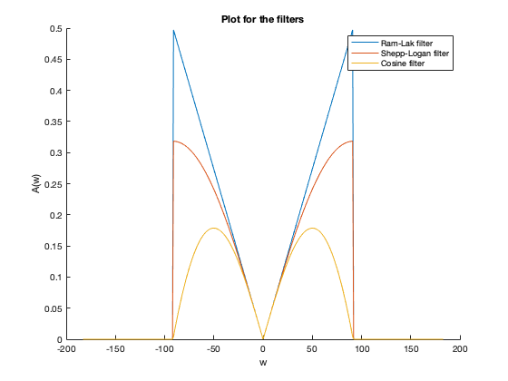
Q2.b) Reconstruction of blurred version of Shepp-Logan Phantom
printImage(im, 'Original image') R = radon(im,theta); [Rf, ~] = myFilter(R,t,'ram-lak',1); imr = iradon(Rf,theta,'linear','none',1,sz)/2; printImage(imr,'Reconstruction of original image'); fprintf('RRMSE for reconstruction of original image = %f\n',rrmse(im,imr)); sigma = [1 5]; ksize = [11 51]; for i=1:length(sigma) mask = fspecial('gaussian',ksize(i),sigma(i)); imb = conv2(im, mask, 'same'); printImage(imb, sprintf('Blurred with sigma=%.1f',sigma(i))); R = radon(imb,theta); [Rf, ~] = myFilter(R,t,'ram-lak',1); imr = iradon(Rf,theta,'linear','none',1,sz)/2; printImage(imr, sprintf('Reconstruction of image with sigma=%.1f',sigma(i))); fprintf('RRMSE for reconstruction of original image = %f\n',rrmse(imb,imr)); end
RRMSE for reconstruction of original image = 0.488816 RRMSE for reconstruction of original image = 0.436148 RRMSE for reconstruction of original image = 0.373521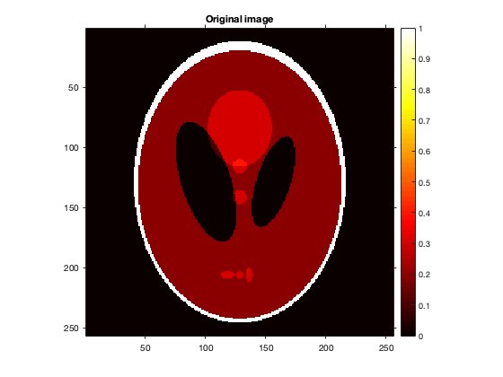 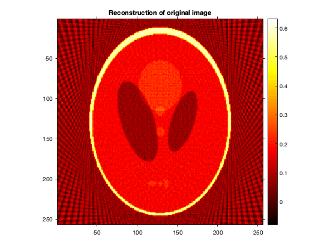 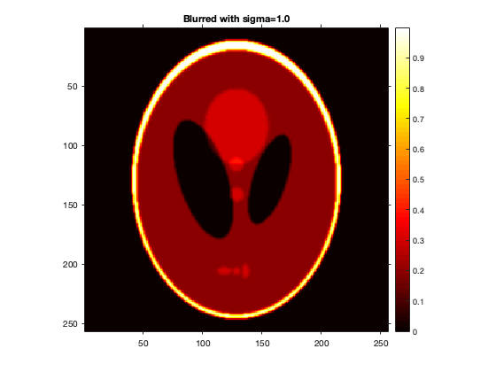 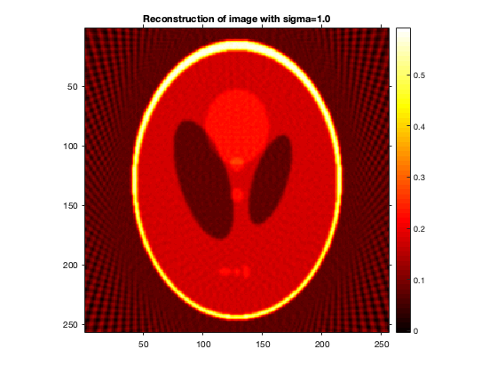 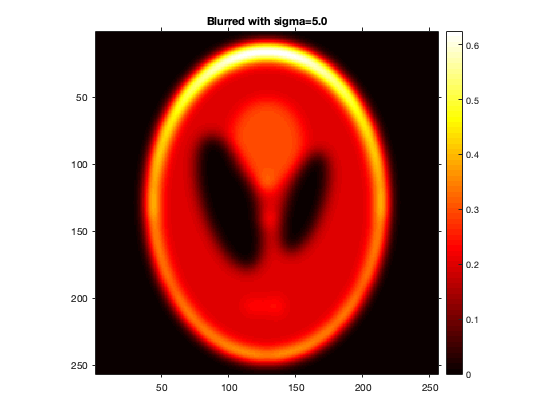 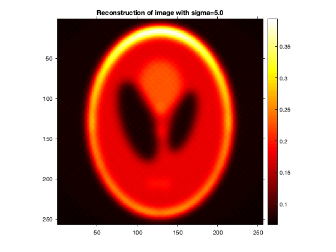
As shown above, RRMSE decreases as we increase sigma for gaussian filter. This can also be verified from the above reconstructed images as the reconstruction for image when blurred using gaussian with sigma=5 is nearly the same as the original blurred image. This could be because with higher sigma, the image is more smooth which means less higher frequencies in the Fourier transform. Since Ram-Lak filter boosts the higher frequency components in the Fourier transform, this boosting is less when image is smoother thus resuting in lesser artifacts from back projection which gives lesser RRMSE.
Q1.c) Plotting RRMSE vs L
n = floor(length(t)/2); history = zeros(3,n); R = radon(im,theta); for i=1:n [Rf, ~] = myFilter(R,t,'ram-lak',i/n); imr = iradon(Rf,theta,'linear','none',1,sz)/2; history(1,i) = rrmse(im,imr); end for i=1:length(sigma) mask = fspecial('gaussian',ksize(i),sigma(i)); imb = conv2(im, mask, 'same'); R = radon(imb,theta); for j=1:n [Rf, ~] = myFilter(R,t,'ram-lak',j/n); imr = iradon(Rf,theta,'linear','none',1,sz)/2; history(1+i,j) = rrmse(imb,imr); end end figure; hold on; for i=1:3 plot(1:n,history(i,:)); end title('RRMSE vs L'); xlabel('L'); ylabel('RRMSE'); legend('Original Image','sigma = 1','sigma = 5');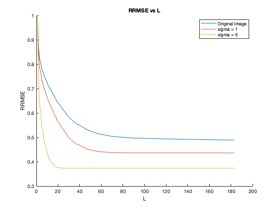
The above plot also shows the trend similar to what we observed in Q2.b i.e., for higher sigma, error is lower. For L=1 error is 1 because L=1 means Ram-Lak filter will not retain any frequencies other than 0. Also with increasing L, error decreases because the filter is able to retain more information about the radon transform. This trend is consistent with the original image but for the blurred images, error stops decreasing after some L. This is because blurring eliminates higher frequencies from the image and therefore higher L doesn't affect the radon transform data as there would be no frequencies higher than L to begin with.